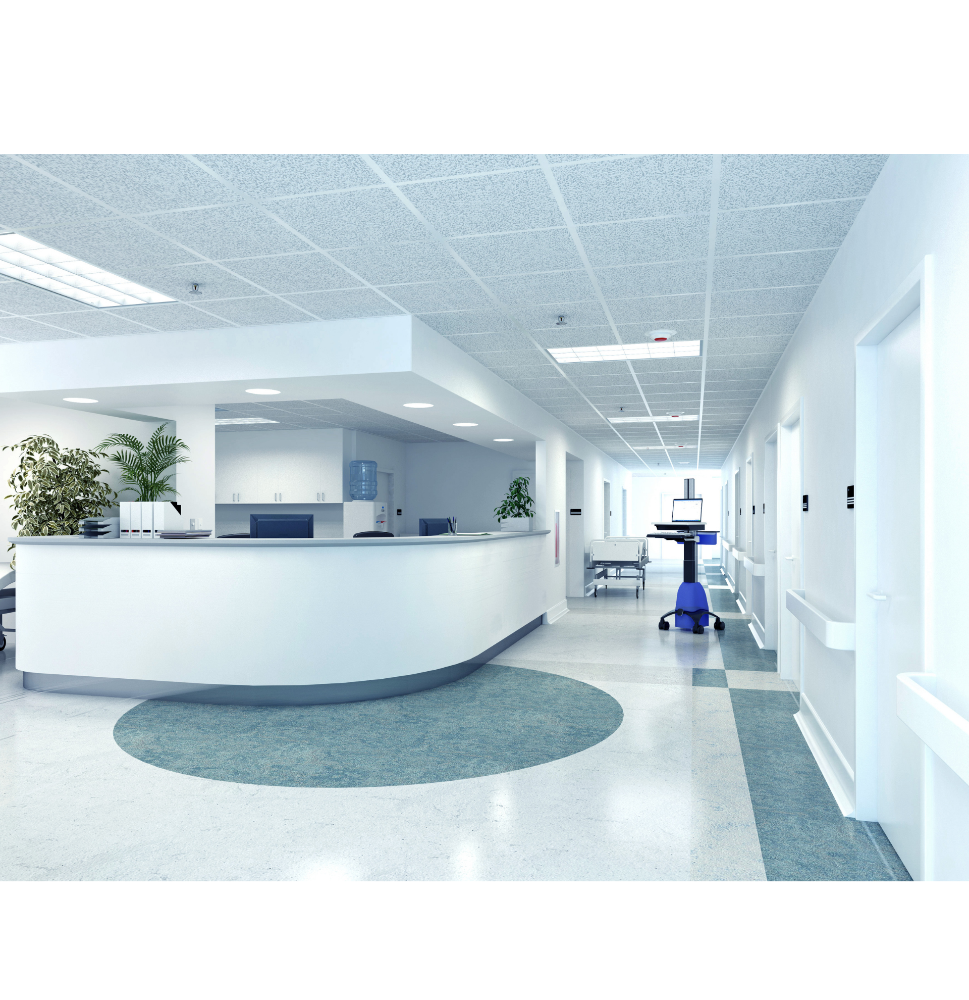
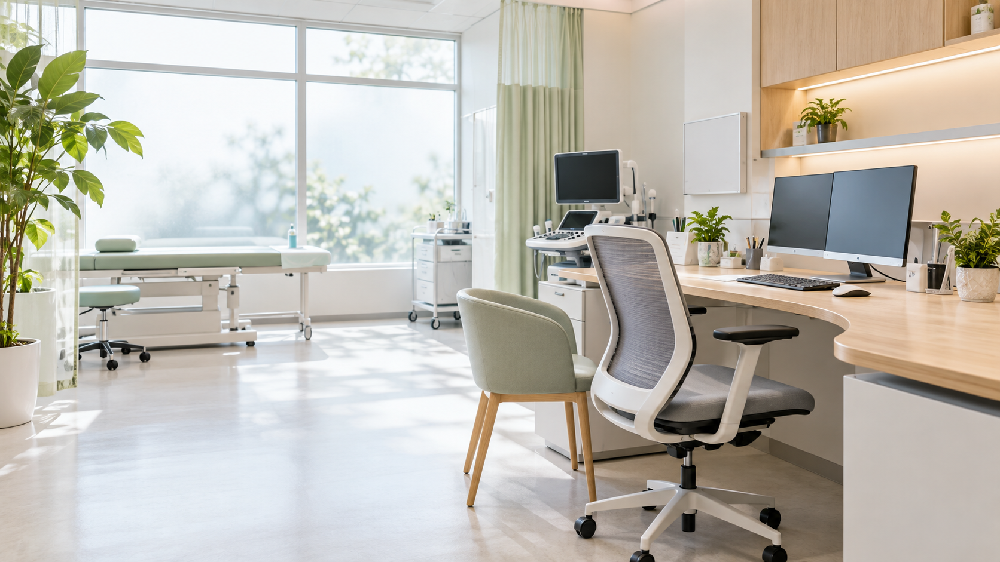

![]() 03-0000-0000
03-0000-0000
ACCESS
アクセス
〒100-0000 東京都千代田区サンプル1-1-1
みどり駅ビル5階
みどり線「みどり駅」改札より徒歩約30秒
提携駐車場あり（詳細は受付まで）

腎機能低下（eGFR 低下・クレアチニン高値）、尿蛋白・血尿、むくみ、高血圧、
頻尿や排尿トラブル、透析のご相談まで。
腎臓内科専門医が、泌尿器科・透析医療まで切れ目なく対応します。
腎機能低下（eGFR 低下・クレアチニン値）、尿蛋白・血尿、むくみ、高血圧、頻尿や排尿トラブル、透析のご相談まで。腎臓内科専門医が、泌尿器科・透析医療まで切れ目なく対応します。
 腎臓内科専門医
腎臓内科専門医![]() 泌尿器科も
泌尿器科も![]() 透析医療に対応
透析医療に対応![]() みどり駅ビル内
みどり駅ビル内〒100-0000 東京都千代田区サンプル1-1-1
みどり駅ビル5階
| 診療時間 | 月 | 火 | 水 | 木 | 金 | 土 | 日 |
|---|---|---|---|---|---|---|---|
| 午前診察9:00 〜 12:30（腎臓内科・泌尿器科） |  | | | | | − | − |
| 午後診察16:00 〜 19:00（腎臓内科・泌尿器科） | | | | | | − | − |
| 夜間診察9:00 〜 22:00（血液透析） | | | | | | | − |
腎臓内科・泌尿器科：土曜日、日曜日
血液透析：日曜
ACCESS
〒100-0000 東京都千代田区サンプル1-1-1
みどり駅ビル5階
みどり線「みどり駅」改札より徒歩約30秒
提携駐車場あり（詳細は受付まで）
MEDICAL HOURS
| 診療時間 | 月 | 火 | 水 | 木 | 金 | 土 | 日 |
|---|---|---|---|---|---|---|---|
| 午前診察9:00 〜 12:30（腎臓内科・泌尿器科） | | | | | | − | − |
| 午後診察16:00 〜 19:00（腎臓内科・泌尿器科） | | | | | | − | − |
| 夜間診察9:00 〜 22:00（血液透析） | | | | | | | − |
腎臓内科・泌尿器科：土曜日、日曜日
血液透析：日曜
当院について
健診異常の段階から、腎臓病の進行予防、泌尿器科診療、透析医療まで、幅広く対応しています。
患者様それぞれの生活背景や通院事情に配慮しながら、分かりやすく丁寧な診療を行います。
専門性がありながらも、地域の皆さまが早い段階で相談しやすいクリニックを目指しています。

CONCERNS
健診で腎機能の異常を指摘された方、
尿の異常、むくみ、高血圧、排尿トラブル、
透析相談など、幅広くご相談いただけます。

尿蛋白、血尿、クレアチニン高値、eGFR 低下 などに対して精密検査を行います。

これらの症状は、腎機能低下のサインかもしれません。

頻尿、尿漏れ、残尿感、排尿時の痛み、性病などの泌尿器症状にも対応しています。

透析導入についての相談、他院からの転院相談、夜間透析の相談などにも対応しております。
FEATURES
専門性のある診療と、通いやすさ、相談しやすさを大切にしています。
健診異常や腎機能低下に対し、現在の状態を整理し、今後の方針まで分かりやすくご説明します。
既存の患者様にも、これまで通り安心して受診していただける体制を整えています。
通院のしやすさや日々の生活も踏まえながら、継続しやすい透析医療を大切にしています。
改札を出てから徒歩約30秒。雨の日でも通いやすく、高齢の方にも負担の少ない立地です。
電話予約、Web予約、初診案内を分かりやすく整理し、初めての方も受診しやすいようにしています。
生活スタイルに合わせて、可能な限り負担の少ない透析治療を目指します。
MEDICAL DEPARTMENTS
腎臓内科・泌尿器科・人工透析まで、切れ目のない診療を行っています。
NEPHROLOGY
健診で腎機能低下や尿異常を指摘された方、むくみや高血圧が気になる方など、腎臓に関するご相談に対応します。
UROLOGY
頻尿、排尿時痛、残尿感、血尿、前立腺肥大、尿路感染症など、日常的な泌尿器科のお悩みに対応します。
DIALYSIS
透析の心配やセカンドオピニオン、透析導入後の継続管理、通院のご相談、見学にも対応しています。
FAQ
予約なしでも受診は可能ですが、お待ちいただく場合があります。初診時は診察に時間を要することもあるため、できるだけご予約のうえご来院ください。お電話または Web 予約をご利用いただけます。
はい。健診結果をご持参のうえご相談ください。必要に応じて、精密検査や今後の治療方針をご案内します。
はい。頻尿、血尿、排尿時の痛みなど、泌尿器科の症状にもこれまで通り対応しています。
透析導入のご相談、他院からの転院、夜間透析についてもお気軽にお問い合わせください。
ACCESS & SCHEDULE
みどり駅ビル内。
継続して通院しやすい立地で、初診の方にも分かりやすくご案内しています。
〒100-0000 東京都千代田区サンプル1-1-1
みどり駅ビル5階
みどり線「みどり駅」改札より徒歩約30秒
提携駐車場あり（詳細は受付まで）
| 診療時間 | 月 | 火 | 水 | 木 | 金 | 土 | 日 |
|---|---|---|---|---|---|---|---|
| 午前診察9:00 〜 12:30（腎臓内科・泌尿器科） | | | | | | − | − |
| 午後診察16:00 〜 19:00（腎臓内科・泌尿器科） | | | | | | − | − |
| 夜間診察9:00 〜 22:00（血液透析） | | | | | | | − |
腎臓内科・泌尿器科：土曜日、日曜日
血液透析：日曜
午前診・午後診に加え、夜間透析にも対応しております。
休診日や透析スケジュールの詳細は、お知らせ欄もあわせてご確認ください。
外来予約システムについてのご案内
新規外来の患者様、再診予約をご希望の患者様は、WEB予約をご利用ください。
ご不明な点がある場合や、透析のご相談をご希望の場合は、お電話でもお問い合わせいただけます。

![]()
![]()